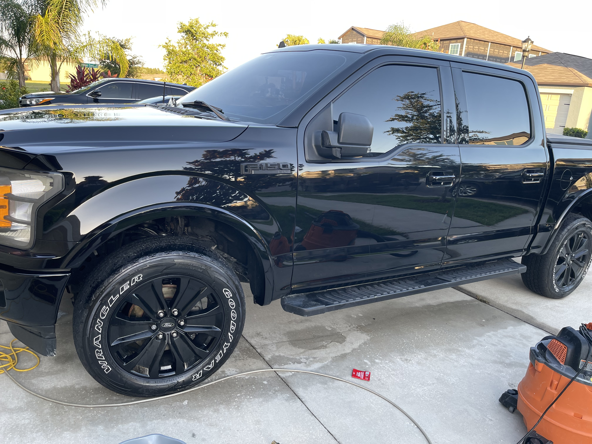
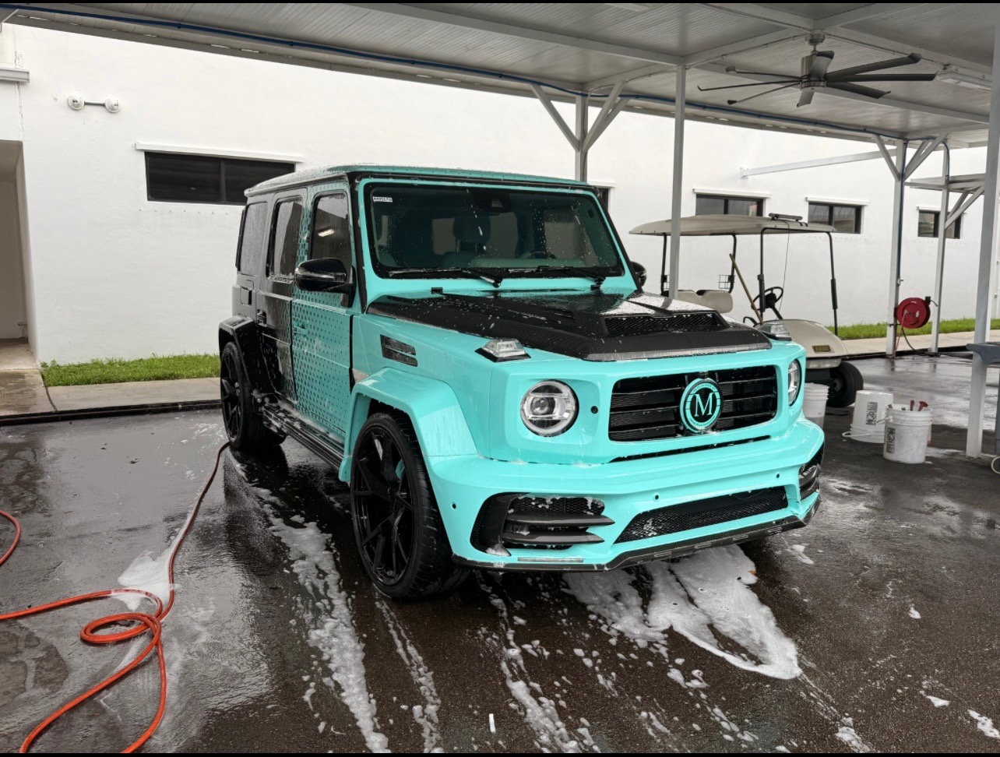
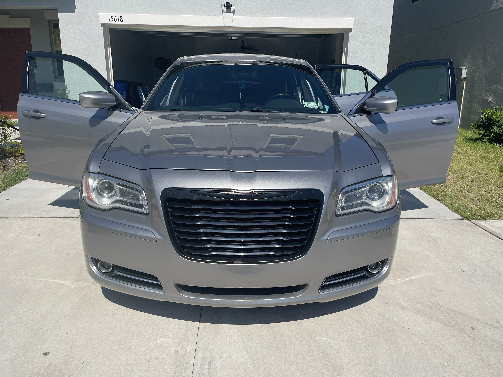
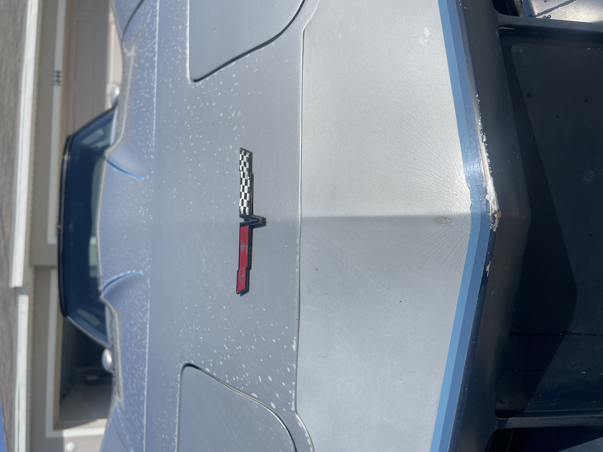
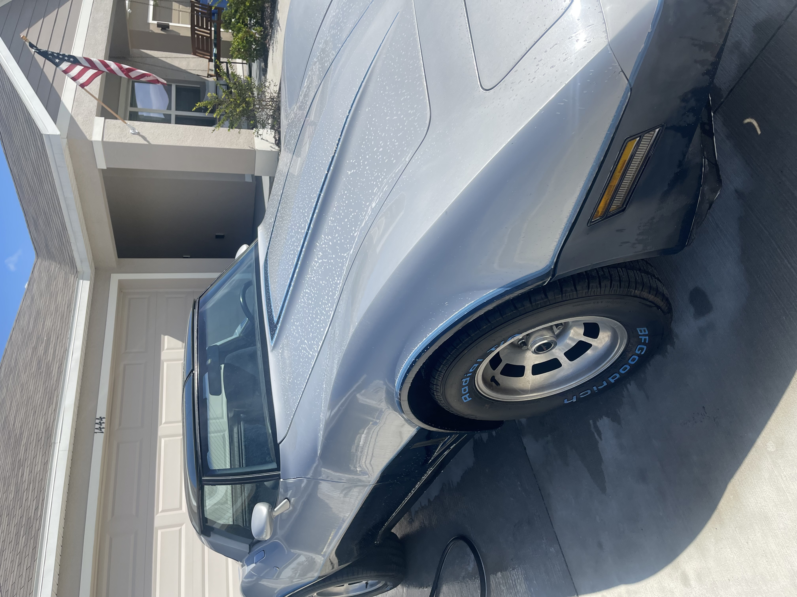

Full Interior Detailing
Deep cleaning for seats, carpets, panels, cupholders, and touchpoints to restore comfort and freshness.
Premium Mobile Detailing In Ruskin, Florida
M&M Car Detailing delivers professional interior detailing, exterior detailing, paint correction, and ceramic coatings right to your driveway.
We come to you
Military-owned and operated business
Serving Ruskin, FL and nearby communities
Phone, social, and local trust signals built in
Our Services
Deep cleaning for seats, carpets, panels, cupholders, and touchpoints to restore comfort and freshness.
Careful washing, trim cleanup, wheel attention, and shine work that brings back a clean, polished look.
Refinement work that helps reduce dullness, light swirls, and tired-looking paint.
Durable protection and gloss enhancement for drivers who want a longer-lasting finish.
Recent Results






About M&M
M&M Car Detailing is a local mobile detailing business based in Ruskin, Florida, serving drivers who want convenience without sacrificing quality.
The business branding highlights military-owned and operated values, and the service approach is built around precision, consistency, and showing up professionally for every vehicle.
★★★★★
Google listing information provided shows a 4.5 rating, open 24 hours, and a welcoming customer experience.
Book With Us
Reach out by phone or social and let M&M Car Detailing bring the service to you.